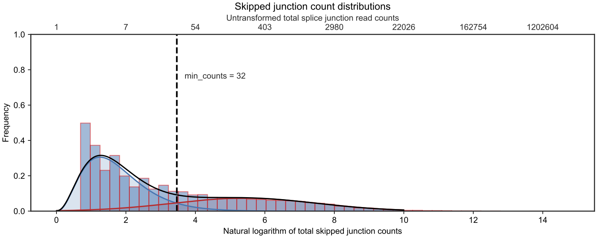

Documentation
Overview
The use of custom RNA-seq derived protein sequences has been shown to be a viable strategy for identifying non-canonical gene products not documented in common protein sequence databases. However, the inclusion of too many sequences can lead to false positive identifications. JCAST combines splice junction modeling and one-frame translation to create small custom protein sequence databases.
JCAST is a command line tool that takes an annotation GTF file, rMATS results, and a genome FASTA file to create custom protein FASTA files for downstream analysis. To prioritize likely detectable splice junctions, JCAST models the minimal splice junction read count in RNA-seq for all canonical-alternative splice junction pairs. JCAST then uses this model to calculate the minimal read count cutoff for in silico translation. An example of the read count mixture model is shown below.

Output
FASTA output
JCAST outputs FASTA databases which can be further filtered and combined using any scripting languages, or can be used directly for database search in virtually any shotgun proteomics database search engines (e.g., SEQUEST, Crux/Tide, Maxquant, MS-GF+). For most usages, we recommend appending the T1.fasta file to the JCAST output canonica.fasta file or the canonical SwissProt database.
JCAST may output the following FASTA files (note depending on the used settings and input files, not all FASTA files may be present):
- xxx_canonical.fasta – This file contains protein sequences from splice junctions that are identical to SwissProt canonical sequences. The FASTA entries are named according to UniProt convention.
- xxx_T1.fasta – This file contains noncanonical sequences translated from splice junctions. Tier 1 junctions are translated in frame according to annotated GTF frames, did not encounter frameshift or premature stop codon, and are successfully joined back to full-length SwissProt sequences.
- xxx_T2.fasta – Tier 2 junctions are translated in frame according to annotated GTF frames, did not encounter premature stop codon, and are successfully joined back to full-length SwissProt sequences, but have encountered a possible frameshift (length differences in exons not multiples of 3).
- xxx_T3.fasta – Tier 3 junctions did not encounter premature stop codon, and are successfully joined back to full-length SwissProt sequences, but using a translation frame different from that annotated in the supplied GTF (they should be rare).
- xxx_T4.fasta – Tier 4 junctions were forced-translated when one of the two alternative junction slices encountered a premature stop codon but could be translated using one of three frames into a peptide fragment at least a certain proportion in length as the successfully translated slice (see params.py). These sequences should be either excluded from database search or interpreted with a great amount of caution.
- **xxx_T#_orphan.fasta** – These fragments were translated according to their tiers but could not be joined back to the canonical SwissProt sequence through the stitch length (see params.py for defaults).
Note: Orphan sequences are non-full-length fragments and should be either excluded from database search or interpreted with a great amount of caution.
Noncanonical FASTA entries have the following naming convention:
>sp|Q91VW5|GOGA4_MOUSE|ENSMUSG00000038708|MXE1|0|chr9|118560742:118560872|118565557:118565667|+2|r521|T1 sp|Q91VW5|GOGA4_MOUSE Golgin subfamily A member 4 OS=Mus musculus OX=10090 GN=Golga4 PE=1 SV=2The vbar(|)-delimited parts denote the following: 1. Knowledgebase name, from canonical SwissProt protein entry (sp) 2. UniProt accession, from canonical SwissProt protein entry (Q91VW5) 3. UniProt name, from canonical SwissProt protein entry (GOGA4_MOUSE) 4. Annotated gene name (ENSMUSG00000038708) 5. rMATS junction type and order (MXE1) 6. Input file row name (0) 7. Chromosome (chr9) 8. Anchor exon start and end (118560742:118560872) 9. Alternative exon start and end (118565557:118565667) 10. Translated strand and phase (+2) 11. Minimal skipped junction count (sjc) in rMATS preceded by r (r521) 12. Tier (T1)
Options
python -m jcast -h
usage: __main__.py [-h] [-o OUT] [-r READ] [-m] [-c] [--mask MASK] [-s {MXE,SE,RI,A5SS,A3SS} [{MXE,SE,RI,A5SS,A3SS} ...]] [-q q_lo q_hi] [--g_or_ln G_OR_LN] rmats_folder gtf_file genome
jcast retrieves transcript splice junctionsand translates them into amino acid sequences
positional arguments:
rmats_folder path to folder storing rMATS output
gtf_file path to Ensembl gtf file
genome path to genome file
optional arguments:
-h, --help show this help message and exit
-o OUT, --out OUT name of the output files [default: psq_out]
-r READ, --read READ the lowest skipped junction read count for a junction to be translated [default: 1]
-m, --model models junction read count cutoff using a Gaussian mixture model [default: False]
-c, --canonical write out canonical protein sequence even if transcriptslices are untranslatable [default: False]
--mask MASK masked nucleotides; slices will not be translated if containing one of these letters [default: NnXx]
-s {MXE,SE,RI,A5SS,A3SS} [{MXE,SE,RI,A5SS,A3SS} ...], --splice_type {MXE,SE,RI,A5SS,A3SS} [{MXE,SE,RI,A5SS,A3SS} ...]
splice type to be translated [default: MXE SE RI A5SS A3SS]
-q q_lo q_hi, --qvalue q_lo q_hi
take junctions with rMATS fdr within this threshold [default: 0 1]
--g_or_ln G_OR_LN Switch on distribution to use for low end of histogram, 0 for Gamma, anything else for LogNorm